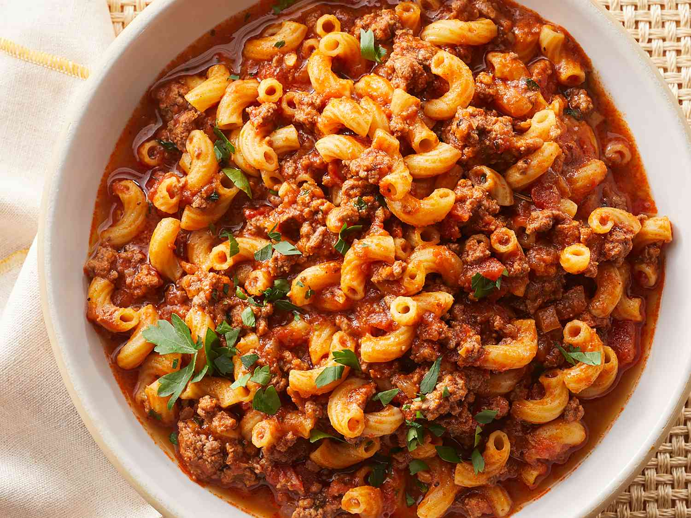

American Goulash

The American Goulash is a delicious noodle stew with a mash of flavors including ground beef, tomatoes, and loads of seasoning.
Ingredients
- 1 tablespoon of olive oil
- 2 pounds of ground beef
- 1 large diced onion
- cloves of minced garlic
- 2 large bay leaves
- 2 tablespoons of paprika
- 2 tesapoons of italian seasoning
- 2 teaspoons of kosher salt
- 1/2 teaspoon of ground black pepper
- 1 pinch of cayenne pepper, or to taste
- 1 quart of chicken broth
- 1 24-ounce jar of marinara sauce
- 1 15-ounce can of diced tomatoes
- 1 cup of water
- 2 tablespoons of soy sauce
- 2 cups of elbow macaroni
- 1/4 cup of chopped italian parsley